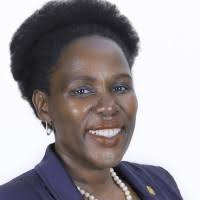
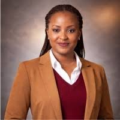
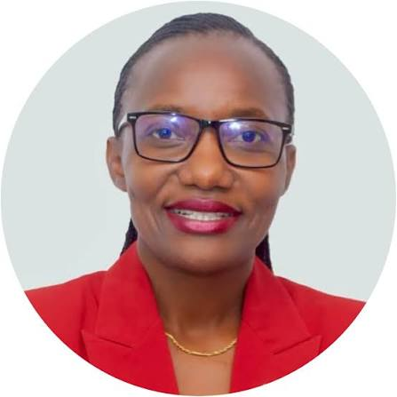
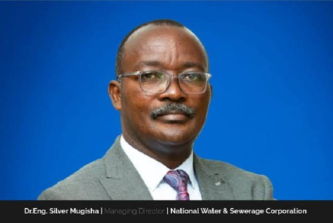

Our Speakers

Dr. Grace Nakato
Executive Director, Uganda Coffee Development Authority
Dr. Nakato has over 20 years of experience in coffee policy and export promotion. She leads national efforts to increase Uganda's coffee earnings.

Prof. Samuel Okello
Professor of Agronomy, Makerere University
Prof. Okello researches climate-smart farming methods for coffee growers. His work has helped thousands of smallholder farmers raise their yields.

Ms. Anna Keller
Senior Market Analyst, International Coffee Organization
Ms. Keller studies global coffee prices and consumer trends. She advises governments on how to reach new export markets.

Mr. David Mugisha
Head of Quality, Uganda Coffee Roasters
Mr. Mugisha is a certified Q Grader who has judged coffee competitions across Africa. He trains farmers and cooperatives on quality standards.
More Speakers
| Name | Organisation | Country | Session Title |
|---|---|---|---|
| Ms. Rehema Ssali | Centenary Bank | Uganda | Financing for Coffee Value Chains |
| Ms. Joyce Atim | Women in Coffee Uganda | Uganda | Women and Youth in Coffee |
| Mr. Peter Kasozi | AgriTech Hub | Uganda | Technology and Digital Trade in Coffee |
| Mr. Carlos Mendes | Brazil Coffee Council | Brazil | Lessons from Brazil's Coffee Industry |
Call for Papers
We invite researchers, farmers, traders and industry experts to submit papers on coffee production, quality, trade, technology and sustainability. Abstracts should be a maximum of 300 words and written in English.
Send your abstract and a short biography to papers@coffeeexpo.example. Selected authors will present their work during the Expo and will be notified by email.
| Milestone | Date | Status |
|---|---|---|
| Abstract Submission Deadline | 30 June 2026 | Closed |
| Notification of Acceptance | 31 July 2026 | Closed |
| Final Paper Submission | 31 August 2026 | Closed |